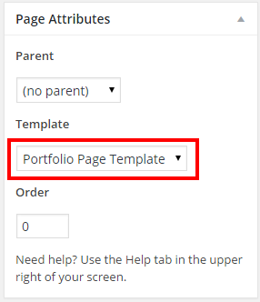
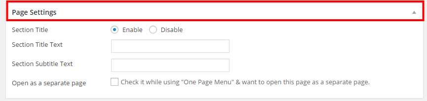
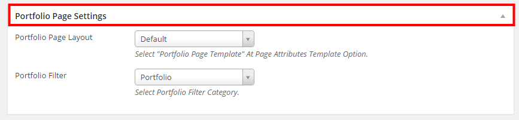
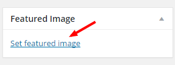

Portfolio Page Setup

- Go to Pages > Add New
- Add your Page Title in the title field
- Select Portfolio Page Template from the Template selection on the right side of the page
- Click Publish
Page Settings

- Section Title: To enable/disable section title at the header select Enable or Disable
- Section Title Text: To add section title text at the left side of the page write down at this text field.
- Section Subtitle Text: To add section subtitle text at the header write down at this text field.
- Open as a separate page: Check it while using "One Page Menu" & want to open this page as a separate page.
Portfolio Page Settings

- Portfolio Page Layout: Bionick has three types Portfolio page layout style and they are Default | Inner | Full Width page style.
- Portfolio Filter: Bionick has three types Portfolio Filter Category and they are Portfolio | Portfolio 2 | Portfolio 3 which is for 3 different filterable portfolio page.

- Upload Section Background Image for the default & inner portfolio page layout style from the featured image option on the right side of the page
- Click Set featured image